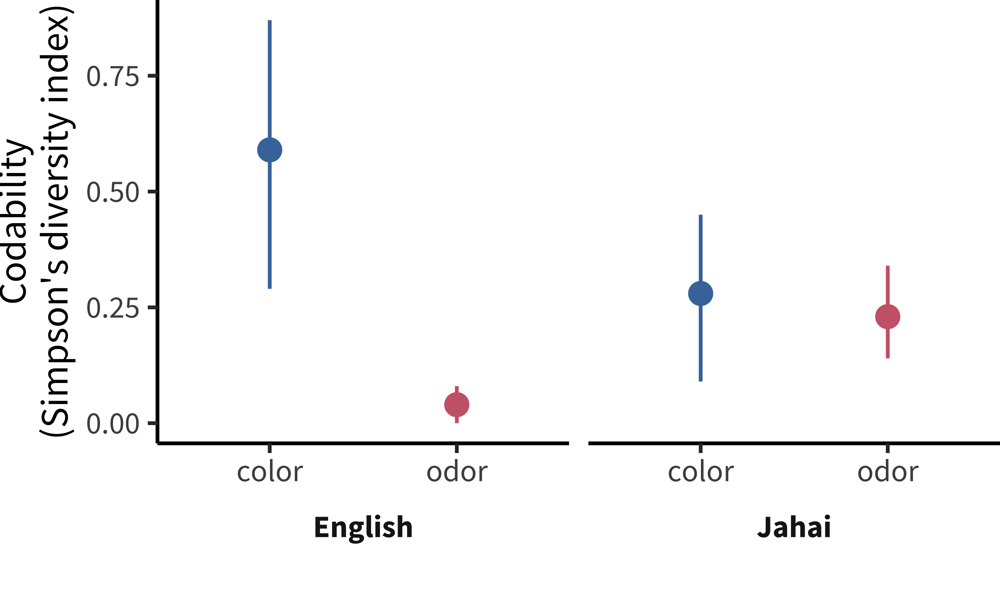
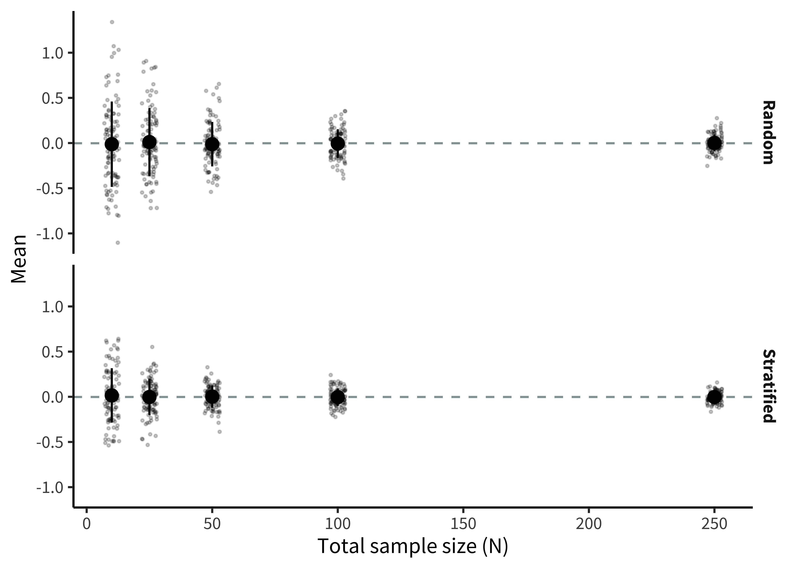
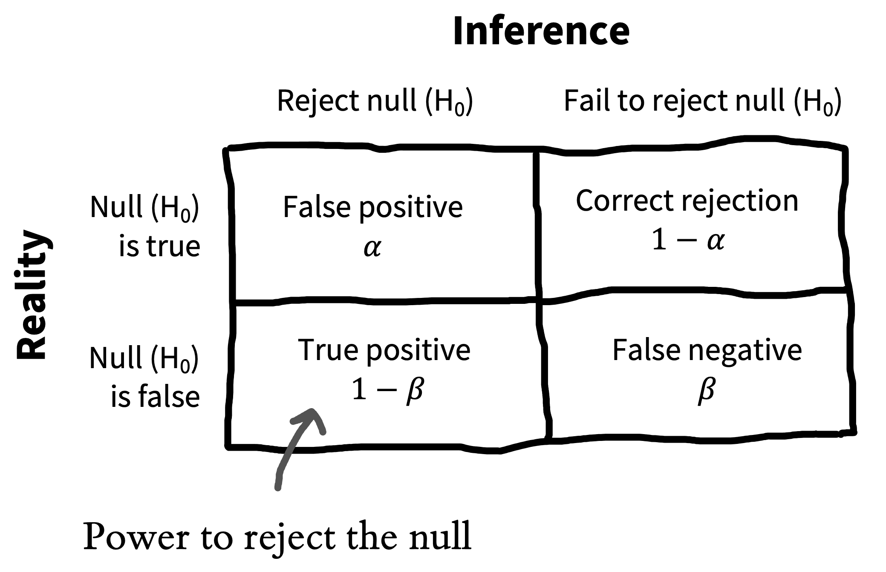

10 Sampling
learning goals
- Discuss sampling theory and stratified sampling
- Reason about the limitations of different samples, especially convenience samples
- Consider sampling biases and how they affect your inferences
- Learn how to choose and justify an appropriate sample size for your experiment
As we keep reminding you, experiments are designed to yield measurements of a causal effect. But a causal effect of what, and for whom? These are questions that are often given surprisingly little air time in our papers. Titles in our top journals read “Daxy thinking promotes fribbles,” “Doing fonzy improves smoodling,” or “Blicket practice produces more foozles than smonkers.”1 Each of these uses generic language to state a claim that is implied to be generally true (DeJesus et al. 2019),2 but for each of these, we could reasonably ask “for whom?”. Is it everyone? Or a particular set of people? These are questions about our key theme, generalizability.
1 Titles changed to protect the original authors. These researchers might very well have said more specific things in the text of their paper.
2 Generic language is a fascinating linguistic phenomenon. When we say things like “mosquitoes transmit malaria,” we don’t mean that all mosquitoes do it, only something like “it’s a valid and diagnostic generalization about mosquitoes in contrast to other relevant insects or other creatures that they are spreaders of malaria” (Tessler and Goodman 2019).
Let’s focus on smoodling. We wouldn’t let the authors get away with a fully universal version of their claim: “Doing [any] fonzy improves smoodling [for everyone].” The non-generic version states a generalization that goes way beyond the evidence we actually have. But it seems that we are often OK with authors implying (with generic language) that their findings generalize broadly. Imagine for a second what the completely specific version of one of these titles might look like: “Reading one particular selection of fonzy for fifteen minutes in the lab improved 36 college students’ smoodling scores on a questionnaire.” This paper sounds pretty narrow in its applicability!
We’ve already run into generalizability in our treatment of statistical estimation and inference. When we estimated a particular quantity (say, the effect of fonzy), we did so in our own sample. But we then used inferential tools to reason about how the estimate in this sample related to the parameter in the population as a whole. How do we link up these statistical tools for generalization to the scientific questions we have about the generalizability of our findings? That’s the question of this chapter.
A key set of decisions in experiment planning is what population to sample from and how to sample. We’ll start by talking about the basics of sampling theory: different ways of sampling and the generalizations they do and don’t license. The second section of the chapter will then deal with sampling biases that can compromise our effect estimates. A final set of key decisions is about sample size planning. In the third part of the chapter we’ll address this issue, starting with classic power analysis but then introducing several other ways that an experimenter can plan and justify their sample size.
10.1 Sampling theory
The basic idea of sampling is simple: you want to estimate some measurement for a large or infinite population by measuring a sample from that population.3 Sampling strategies are split into two categories. Probability sampling strategies are those in which each member of the population has some known, pre-specified probability of being selected to be in the sample—think, “generalizing to Japanese people by picking randomly from a list of everyone in Japan.” Non-probability sampling covers strategies in which probabilities are unknown or shifting, or in which some members of the population could never be included in the sample—think, “generalizing to Germans by sending a survey to a German email list and asking people to forward the email to their family.”
3 There are some tools for dealing with estimation in smaller populations where your sample is a substantial fraction of the population (e.g., a survey of your department where you get responses from half of the students). We won’t discuss those here; our focus is on generalizing to large populations of humans.
case study
Is everyone bad at describing smells?
Since Darwin, scientists have assumed that smell is a vestigial sense in humans—one that we don’t even bother to encode in language. In English we don’t even have consistent words for odors. We can say something is “stinky,” “fragrant”, or maybe “musty,” but beyond these, most of our words for smells are about the source of the smell, not the qualities of it. Bananas, roses, and skunks all have distinctive smells, but we don’t have any vocabulary for naming what is common or uncommon about them. And when we make up ad-hoc vocabulary, it’s typically quite inconsistent (Majid and Burenhult 2014). The same situation applies across many languages.
So, would it be a good generalization about human beings—all people—that olfaction as a sense is de-emphasized relative to, say, vision? This inference has a classic sample-to-population structure. Within several samples of participants using widely-spoken languages, we observe limited and inconsistent vocabulary for smells, as well as poor discrimination. We use these samples to license an inference to the population—in this case, the entire human population.
But these inferences about the universal lack of olfactory vocabulary are likely based on choosing non-representative samples! Multiple hunter-gatherer groups appear to have large vocabularies for consistent smell description. For example, the Jahai, a hunter-gatherer group on the Malay Peninsula, have a vocabulary that includes at least twelve words for distinct odors, for example /cŋɛs/, which names odors with a “stinging smell” like gasoline, smoke, or bat droppings. When Jahai speakers are asked to name odors, they produce shorter and much more consistent descriptions than English speakers—in fact, their smell descriptions were as consistent as their color descriptions (figure 10.1). Further studies implicate the hunter-gatherer lifestyle as a factor: while several hunter-gatherer groups show good odor naming, nearby horticulturalist groups don’t (Majid and Kruspe 2018).
Generalizations about humans are tricky. If you want to estimate the average odor naming ability, you could take a random sample of humans and evaluate their odor naming. Most of the individuals in the sample would likely speak English, Mandarin, Hindi, or Spanish. Almost certainly, none of them would speak Jahai, which is spoken by only a little more than a thousand people and is listed as Threatened by Ethnologue (https://www.ethnologue.com/language/jhi). Your estimate of low odor naming stability might be a good guess for the majority of the world’s population, but would tell you little about the Jahai.
On the other hand, it’s more complicated to jump from a statistical generalization about average ability to a richer claim, like “humans have low olfactory naming ability.” Such claims about universal aspects of the human experience require much more care and much stronger evidence (Piantadosi and Gibson 2014). From a sampling perspective, human behavior and cognition show immense and complex heterogeneity—variability of individuals and variability across clusters. Put simply, if we want to know what people in general are like, we have to think carefully about which people we include in our studies.
10.1.1 Classical probability sampling
In classical sampling theory there is some sampling frame containing every member of the population—think of a giant list with every adult human’s name in it. Then we use some kind of sampling strategy, maybe at the simplest just a completely random choice, to select \(N\) humans from that sample frame, and then we include them in our experiment. This scenario is the one that informs all of our statistical results about how sample means converge to the population mean (as in chapter 6).
Unfortunately, we very rarely do sampling of this sort in psychological research. Gathering true probability samples from the large populations that we’d like to generalize to is far too difficult and expensive. Consider the problems involved in doing some experiment with a sample of all adult humans, or even adult English-speaking humans who are located in the United States. As soon as you start to think about what it would take to collect a probability sample of this kind of population, the complexities get overwhelming. How will you find their names—what if they aren’t in the phone book? How will you contact them—what if they don’t have email? How will they do your experiment—what if they don’t have an up-to-date web browser? What if they don’t want to participate at all?
Instead, the vast majority of psychology research has been conducted with convenience samples: non-probability samples that feature individuals who can be recruited easily, such as college undergraduates or workers on crowdsourcing platforms like Amazon Mechanical Turk or Prolific Academic (see chapter 12). We’ll turn to these below.
For survey research, on the other hand—think of election polling—there are many sophisticated techniques for dealing with sampling; although this field is still imperfect, it has advanced considerably in trying to predict complex and dynamic behaviors. One of the basic ideas is the construction of representative samples: samples that resemble the population in their representation of one or several sociodemographic characteristics like gender, income, race and ethnicity, age, or political orientation.
Representative samples can be constructed by probability sampling, but they can also be constructed through non-probability methods like recruiting quotas of individuals from different groups via various different convenience methods. These methods are critical for much social science research, but they have been used less frequently in experimental psychology research and aren’t necessarily a critical part of the beginning experimentalist’s toolkit.4
4 Readers can come up with counter-examples of recent studies that focus on representative sampling, but our guess is that they will prove the rule more generally. For example, a recent study tested the generality of growth mindset interventions for US high school students using a national sample (Yeager et al. 2019). This large-scale study sampled more than 100 high schools from a sampling frame of all registered high schools in the US, then randomly assigned students within schools that agreed to participate. They then checked that the schools that agreed to participate were representative of the broader population of schools. This study is great stuff, but we hope you agree that if you find yourself in this kind of situation—planning a multi-investigator 5 year consortium study on a national sample—you might want to consult with a statistician and not use an introductory book like this one.
depth
Representative samples and stratified sampling
Stratified sampling is a cool method that can help you get more precise estimates of your experimental effect, if you think it varies across some grouping in your sample. Imagine you’re interested in a particular measure in a population—say, attitudes towards tea drinking across US adults—but you think that this measure will vary with one or more characteristics such as whether the adults are frequent, infrequent, or non-coffee drinkers. Even worse, your measure might be more variable within one group: perhaps most frequent and infrequent coffee drinkers feel OK about tea, but as a group non-coffee drinkers tend to hate it (most don’t drink any caffeinated beverages).
A simple random sample from this heterogeneous population will yield statistical estimates that converge asymptotically to the correct population average for tea-drinking attitudes. But it will do so more slowly than ideal because any given sample may over- or under-sample non-drinkers just by chance. In a small sample, if you happen to get too many non-coffee drinkers, your estimate of attitudes will be biased downward; if you happen to get too few, you will be biased upwards. All of this will come out in the wash eventually, but any individual sample (especially a small one) will be noisier than ideal.

But, if you know the proportion of frequent, infrequent, or non-coffee drinkers in the population, you can perform stratified sampling within those subpopulations to ensure that your sample is representative along this dimension (Neyman 1992). This situation is pictured in figure 10.2, which shows how a particular sampling frame can be broken up into groups for stratified sampling. The result is a sample that matches the population proportions on a particular characteristic. In contrast, a simple random sample can over- or under-sample the subgroups by chance.
Stratified sampling can lead to substantial gains in the precision of your estimate. These gains are most prominent when either the groups differ a lot in their mean or when they differ a lot in their variance. There are several important refinements of stratified sampling in case you think these methods are important for your problem. In particular, optimal sampling can help you figure out how to over-sample groups with higher variance. On the other hand, if the characteristic on which you stratify participants doesn’t relate to your outcome at all, then estimates from stratified sampling converge just as fast as random sampling (though it’s a bit more of a pain to implement).
figure 10.3 shows a simulation of the scenario in figure 10.2, in which each coffee preference group has a different tea attitude mean, and the smallest group has the biggest variance. Although the numbers here are invented, it’s clear that estimation error is much smaller in the stratified group and estimation error declines much more quickly as samples get larger.

Stratification is everywhere, and it’s useful even in convenience samples. For example, researchers who are interested in development typically stratify their samples across ages (e.g., recruiting equal numbers of two- and three-year-olds for a study of preschoolers). You can estimate developmental change in a pure random sample, but you are guaranteed good coverage of the range of interest when you stratify.
If you have an outcome that you think varies with a particular characteristic, it’s not a bad idea to consider stratification. But don’t go overboard—you can drive yourself to distraction finding the last left-handed non-binary coffee drinker to complete your sample. Focus on stratifying when you know the measure varies with the characteristic of interest.
10.2 Convenience samples, generalizability, and the WEIRD problem
Now let’s go back to the question of generalizability. How generalizable are the experimental effect estimates that we obtain in experiments that are conducted only with convenience samples? We’ll start by laying out the worst version of the problem of generalizability in experimental psychology. We’ll then try to pull back from the brink and discuss some reasons why we might not want to be in despair despite some of the generalizability issues that plague the psychology literature.
10.2.1 The worst version of the problem
Psychology is the study of the human mind. But from a sampling theory standpoint, not a single estimate in the published literature is based on a simple random sample from the human population. And the situation is worse than that. Here are three of the most severe issues that have been raised regarding the generalizability of psychology research.
Convenience samples. Almost all research in experimental psychology is performed with convenience samples. This issue has led to the remark that “the existing science of human behavior is largely the science of the behavior of sophomores” (McNemar, 1946, quoted in Rosenthal and Rosnow 1984). The samples we have easy access to just don’t represent the populations we want to describe! At some point there was a social media account devoted to finding biology papers that made big claims about curing diseases and appending the qualifier “in mice” to them. We might consider whether we need to do the same to psychology papers. Would “Doing fonzy improves smoodling in sophomore college undergraduates in the Western US” make it into a top journal?
The WEIRD problem. Not only are the convenience samples that we study not representative of the local or national contexts in which they are recruited, those local and national contexts are also unrepresentative of the broad range of human experiences. Henrich, Heine, and Norenzayan (2010) coined the term WEIRD (Western, Educated, Industrialized, Rich, and Democratic) to sum up some of the ways that typical participants in psychology experiments differ from other humans. The vast over-representation of WEIRD participants in the literature has led some researchers to suggest that published results simply reflect “WEIRD psychology”—a small and idiosyncratic part of a much broader universe of human psychology.5
The item sampling issue. As we discussed in chapter 7 and 9, we’re typically not just trying to generalize to new people, we’re also trying to generalize to new stimuli (Westfall, Judd, and Kenny 2015). The problem is that our experiments often use a very small set of items, constructed by experimenters in an ad-hoc way rather than sampled as representatives of a broader population of stimuli that we hope to generalize to with our effect size estimate. What’s more, our statistical analyses sometimes fail to take stimulus variation into account. Unless we know about the relationship of our items to the broader population of stimuli, our estimates may be based on unrepresentative samples in yet another way.
5 The term WEIRD has been very useful in drawing attention to the lack of representation of the breadth of human experiences in experimental psychology. But one negative consequence of this idea has been the response that what we need to do as a field is to sample more “non-WEIRD” people. It is not helpful to suggest that every culture outside the WEIRD moniker is the same (Syed and Kathawalla 2020)! A better starting point is to consider the way that cultural variation might guide our choices about sampling.
In sum, experiments in the psychology literature primarily measure effects from WEIRD convenience samples of people and unsystematic samples of experimental stimuli. Should we throw up our hands and resign ourselves to an ungeneralizable “science” of sample-specific anecdotes (Yarkoni 2020)?
10.2.2 Reasons for hope and ways forward
We think the situation isn’t as bleak as the arguments above might have suggested. Underlying each of the arguments above is the notion of heterogeneity, the idea that particular effects vary in the population.
Let’s think through a very simple version of this argument. Say we have an experiment that measures the smoodling effect, and it turns out that smoodling is completely universal and invariant throughout the human population. Now, if we want to get a precise estimate of smoodling, we can take any sample we want because everyone will show the same pattern. Because smoodling is homogeneous, a non-representative sample will not cause problems. There are some phenomena like this! For example, the Stroop task produces a consistent and similar interference effect for almost everyone (Hedge, Powell, and Sumner 2018).

figure 10.4 illustrates this argument more broadly. If you have a representative sample (top), then your sample mean and your population mean will converge to the same value, regardless of whether the effect is homogeneous (right) or heterogeneous (right). That’s the beauty of sampling theory. If you have a convenience sample, one part of the population is over-represented in the sample. The convenience sample doesn’t cause problems if the size of your effect is homogeneous in the population—as with the case of smoodling or Stroop. The trouble comes when you have an effect that is heterogeneous. Because one group is over-represented, you get systematic bias in the sample mean relative to the population mean.
So the problems listed above—convenience samples, WEIRD samples, and narrow stimulus samples—only cause issues if effects are heterogeneous. Are they? The short answer is, we don’t know. Convenience samples are fine in the presence of homogeneous effects, but we only use convenience samples so we may not know which effects are homogeneous! Our metaphorical heads are in the sand.
We can’t do better than this circularity without a theory of what should be variable and what should be consistent between individuals.6 As naïve observers of human behavior, differences between people often loom large. We are keen observers of social characteristics like age, gender, race, class, and education. For this reason, our intuitive theories of psychology often foreground these characteristics as the primary locus for variation between people. Certainly these characteristics are important, but they fail to explain many of the invariances of human psychology as well. An alternative line of theorizing starts with the idea that “lower-level” parts of psychology—like perception—should be less variable than “higher-level” faculties like social cognition. This kind of theory sounds like a useful place to start, but there are also counter-examples in the literature, including cases of cultural variation in perception (Henrich, Heine, and Norenzayan 2010).
6 Many people have theorized about the ways that culture and language in general might moderate psychological processes (e.g., Markus and Kitayama 1991). What we’re talking about is related but slightly different—a theory not of what’s different, but of when there should be any difference and when there shouldn’t be. As an example, Tsai (2007)’s “ideal affect” theory predicts that there should be more similarities in the distribution of actual affect across cultures, but that cultural differences should emerge in ideal affect (what people want to feel like) across cultures. This is a theory of when you should see homogeneity and when you should see heterogeneity.
Multi-lab, multi-nation studies can help to address questions about heterogeneity, breaking the circularity we described above. For example, ManyLabs 2 systematically investigated the replicability of a set of phenomena across cultures (Klein et al. 2018), finding limited variation in effects between WEIRD sites and other sites. And in a study comparing a set of convenience and probability samples, Coppock, Leeper, and Mullinix (2018) found limited demographic heterogeneity in another sample of experimental effects from across the social sciences. So there are at least some cases where we don’t have to worry as much about heterogeneity. More generally, such large-scale studies offer the possibility of measuring and characterizing demographic and cultural variation—as well as how variation itself varies between phenomena!
10.3 Biases in the sampling process
In fields like econometrics or epidemiology that use observational methods to estimate causal effects, reasoning about sampling biases is a critical part of estimating generalizable effects. If your sample does not represent the population of interest, then your effect estimates will be biased.7 In the kind of experimental work we are discussing many of these issues are addressed by random assignment, including the first issue we treat: collider bias. Not so for the second one, attrition bias, which is an issue even in randomized experiments.
7 There is a deep literature on correcting these biases using causal inference frameworks. These techniques are well outside of the scope of this book, but if you’re interested, you might look at some of the textbooks we recommended earlier, e.g. Cunningham (2021).
10.3.1 Collider bias
Imagine you want to measure the association between money and happiness through a (non-experimental) survey. As we discussed in chapter 1, there are plenty of causal processes that could lead to this association. Figure 10.5 shows several of these scenarios. Money could truly cause happiness (1); happiness could cause you to make more money (2); or some third factor—say having lots of friends—could cause people to be happier and richer (3).

But we can also create spurious associations if we are careless in our sampling. One prominent problem that we can induce is called collider bias. Suppose we recruited our sample from the clients of a social services agency. Unfortunately, both of our variables might affect presence in a social service agency (figure 10.5, 4): people might be interacting with the agency for financial or benefits assistance, or else for psychological services (perhaps due to depression).
Being in a social services sample is called a collider variable because the two causal arrows collide into it (they both point to it). If we look just within the social services sample, we might see a negative association between wealth and happiness—on average the people coming for financial assistance would have less wealth and more happiness than the people coming for psychological services. The take-home here is that in observational research, you need to think carefully about the causal structure of your sampling process (Rohrer 2018)!
If you are doing experimental research, you are mostly protected from this kind of bias: Random assignment still “works” even in sub-selected samples. If you run a money intervention within a social-services population using random assignment, you can still make an unbiased estimate of the effect of money on happiness. But that estimate will only be valid for members of that sub-selected population.
10.3.2 Attrition bias
Attrition is when people drop out of your study. You should do everything you can to improve participants’ experiences (see chapter 12) but sometimes—especially when a manipulation is onerous for participants or your experiment is longitudinal and requires tracking participants for some time—you will still have participants withdraw from the study.
Attrition on its own can be a threat to the generalizability of an experimental estimate. Imagine you do an experiment comparing a new very intense after-school math curriculum to a control curriculum in a sample of elementary school children over the course of a year. By the end of the year, suppose many of your participants have dropped out. The families who have stayed in the study are likely those who care most about math. Even if you see an effect of the curriculum intervention, this effect may generalize only to children in families who love math.

8 If you get deeper into drawing DAGs like we are doing here, you will want to picture attrition as its own node in the graph, but that’s beyond the scope of this book.
But there is a further problem with attrition, known as selective attrition. If attrition is related to the outcome specifically within the treatment group (or for that matter, specifically within the control group), you can end up with a biased estimate, even in the presence of random assignment (Nunan, Aronson, and Bankhead 2018)! Imagine students in the control condition of your math intervention experiment stayed in the sample, but the math intervention itself was so tough that most families dropped out except those who were very interested in math. Now, when you compare math scores at the end of the experiment, your estimate will be biased (figure 10.6): scores in the math condition could be higher simply because of differences in who stuck around to the end.8
Unfortunately, it turns out that attrition bias can be pretty common even in short studies, especially when they are conducted online when a participant can drop out simply by closing a browser window. This bias can be serious enough to lead to false conclusions. For example, Zhou and Fishbach (2016) ran an experiment in which they asked online participants to write about either 4 happy events (low difficulty) or 12 happy events (high difficulty) from the last year and then asked the participants to rate the difficulty of the task. Surprisingly, the high difficulty task was rated as easier than the low difficulty task! Selective attrition was the culprit for this counter-intuitive conclusion: while only 26% of participants dropped out of the low difficulty condition, a full 69% dropped out of the high difficulty task. The 31% that were left found it quite easy for them to generate 12 happy events, and so they rated the objectively harder task as less difficult.
Always try to track and report attrition information. That lets you—and others—understand whether attrition is leading to bias in your estimates or threats to the generalizability of your findings.9
9 If you get interested, there is a whole field of statistics that focuses on missing data and provides models for reasoning about and dealing with cases where data might not be missing completely at random (Little and Rubin 2019 is the classic reference for these tools). The causal inference frameworks referenced above also have very useful ways of thinking about this sort of bias.
10.4 Sample size planning
Now that you have spent some time considering your sample and what population it represents, how many people will your sample contain? Continuing to collect data until you observe a \(p < .05\) in an inferential test is a good way to get a false positive. This practice, known as “optional stopping,” is a good example of a practice that invalidates \(p\)-values, much like the cases of analytic flexibility discussed in chapter 3 and chapter 6.
Decisions about when to stop collecting data should not be data-dependent. Instead you should transparently declaring your data collection stopping rule in your study preregistration (see chapter 11). This step will reassure readers that there is no risk of bias from optional stopping. The simplest stopping rule is “I’ll collect data until I get to a target \(N\)”—all that’s needed in this case is a value for \(N\).
But how do you decide \(N\)? It’s going to be dependent on the effect that you want to measure, and how it varies in the population. Smaller effects will require larger sample sizes. Classically, \(N\) was computed using power analysis, which can provide a sample size for which you have a good chance of rejecting the null hypothesis (given a particular expected effect size). We’ll introduce this computation below.
Classical power analysis is not the only way to plan your sample size. There are a number of other useful strategies, some of which rely on the same kinds of computations as power analysis (table 10.1). Each of these can provide a valid justification for a particular sample size, but they are useful in different situations.
| Method | Stopping Rule | Example |
|---|---|---|
| Power analysis | Stop at N for known probability of rejecting the null given known effect size | Randomized trial with strong expectations about effect size |
| Resource constraint | Stop collecting data after a certain amount of time or after a certain amount of resources are used | Time-limited field work |
| Smallest effect size of interest | Stop at N for known probability of rejecting the null for effects greater than some minimum | Measurement of a theoretically important effect with unknown magnitude |
| Precision analysis | Stop at N that provides some known degree of precision in measure | Experimental measurement to compare with predictions of cognitive models |
| Sequential analysis | Stop when a known inferential criterion is reached | Intervention trial designed to accept or reject null with maximal efficiency |
10.4.1 Power analysis

Let’s start by reviewing the null-hypothesis significance testing paradigm that we introduced in chapter 6. Recall that we introduced the Neyman-Pearson decision-theoretic view of testing in chapter 6, shown again in figure 10.7. The idea was that we’ve got some null hypothesis \(H_0\) and some alternative \(H_1\)—something like “no effect” and “yes, there is some effect with known size”– and we want to use data to decide which state we’re in. \(\alpha\) is our criterion for rejecting the null, conventionally set to \(\alpha=.05\).
But what if \(H_0\) is actually false and the alternative \(H_1\) is true? Not all experiments are equally well set up to reject the null in those cases. Imagine doing an experiment with \(N=3\). In that case, we’d almost always fail to reject the null, even if it were false. Our sample would almost certainly be too small to rule out sampling variation as the source of our observed data.
Let’s try to quantify our willingness to miss the effect—the false negative rate. We’ll denote this probability with \(\beta\). If \(\beta\) is the probability of missing an effect (failing to reject the null when it’s really false), then \(1-\beta\) is the probability that we correctly reject the null when it is false. That’s what we call the statistical power of the experiment.
We can only compute power if we know the effect size for the alternative hypothesis. If the alternative hypothesis is a small effect, then the probability of rejecting the null will typically be low (unless the sample size is very large). In contrast, if the alternative hypothesis is a large effect, then the probability of rejecting the null will be higher.

The same dynamic holds with sample size: the same effect size will be easier to detect with a larger sample size than with a small one. Figure 10.8 shows how this relationship works. A large sample size creates a tighter null distribution (right side) by reducing sampling error. A tighter null distribution means you can reject the null more of the time based on the variation in a true effect. If your sample size is too small to detect your effect much of the time, we call this being under-powered.10
10 You can also refer to a design as over-powered, though we object slightly to this characterization, since the value of large datasets is typically not just to reject the null but also to measure an effect with high precision and to investigate how it is moderated by other characteristics of the sample.
11 Our focus here is on giving you a conceptual introduction to power analysis, but we refer you to Cohen (1992) for a more detailed introduction.
Classical power analysis involves computing the sample size \(N\) that’s necessary in order to achieve some level of power, given \(\alpha\) and a known effect size.11 The mathematics of the relationship between \(\alpha\), \(\beta\), \(N\), and effect size have been worked out for a variety of different statistical tests (Cohen 2013) and codified in software like G*Power (Faul et al. 2007) and the pwr package for R (Champely et al. 2017). For other cases (including mixed effects models), you may have to conduct a simulation in which you generate many simulated experimental runs under known assumptions and compute how many of these lead to a significant effect; luckily, R packages exist for this purpose as well, including the simr package (Green and MacLeod 2016).
10.4.2 Power analysis in practice
Let’s do a power analysis for our hypothetical money and happiness experiment. Imagine the experiment is a simple two group design in which participants from a convenience population are randomly assigned either to receive $1000 and some advice on saving money (experimental condition) vs. just receiving the advice and no money (control condition). We then follow up a month later and collect self-reported happiness ratings. How many people should we have in our study in order to be able to reject the null? The answer to this question depends on our desired values of \(\alpha\) and \(\beta\) as well as our expected effect size for the intervention.
For \(\alpha\) we will just set a conventional significance threshold of \(\alpha = .05\). But what should be our desired level of power? The usual standard in the social sciences is to aim for power above 80% (e.g., \(\beta < .20\)); this gives you 4 out of 5 chances to observe a significant effect. But just like \(\alpha = .05\), this is a conventional value that is perhaps a little bit too loose for modern standards—a strong test of a particular effect should probably have 90% or 95% power.12
12 Really, researchers interested in using power analysis in their work should give some thought to what sort of chance of a false negative they are willing to accept. In exploratory research perhaps a higher chance of missing an effect is reasonable; in contrast, in confirmatory research it might make sense to aim for a higher level of power.
These choices are relatively easy, compared to the fundamental issue: our power analysis requires some expectation about our effect size. This is the first fundamental problem of power analysis: if you knew the effect size, you might not need to do the experiment!
So how are you supposed to get an estimate of effect size? Here are a few possibilities:
Meta-analysis. If there is a good meta-analysis of the effect that you are trying to measure (or something closely related), then you are in luck. A strong meta-analysis will have not only a precise effect size estimate but also some diagnostics detecting and correcting potential publication bias in the literature (see chapter 16). While these diagnostics are imperfect, they still can give you a sense for whether you can use the meta-analytic effect size estimate as the basis for a power analysis.
Specific prior study. A more complicated scenario is when you have only one or a handful of prior studies that you would like to use as a guide. The trouble is that any individual effect in the literature is likely to be inflated by publication and other selective reporting biases (see chapter 3). Thus, using this estimate likely means your study will be under-powered—you might not get as lucky as a previous study did!
Pilot testing. Many people (including us) at some point learned that one way to do a power analysis is to conduct a pilot study, estimate the effect size from the pilot, and then use this effect estimate for power analysis in the main study. We don’t recommend this practice. The trouble is that your pilot study will have a small sample size, leading to a very imprecise estimate of effect size (Browne 1995). If you over-estimate the effect size, your main study will be very under-powered. If you under-estimate, the opposite will be true. Using a pilot for power analysis is a recipe for problems.
General expectations about an effect of interest. In our view, perhaps the best way you can use power analysis (in the absence of a really strong meta-analysis, at least) is to start with a general idea about the size of effect you expect and would like to be able to detect. It is totally reasonable to say, “I don’t know how big my effect is going to be, but let’s see what my power would be if it were medium-sized (say \(d=.5\)), since that’s the kind of thing we’re hoping for with our money intervention.” This kind of power analysis can help you set your expectations about what range of effects you might be able to detect with a given sample size.
For our money study, using our general expectation of a medium size effect, we can compute power for \(d=.5\). In this case, we’ll simply use the two-sample \(t\)-test introduced in chapter 6, for which 80% power at \(\alpha = .05\) and \(d=.5\) is achieved by having \(N=64\) in each group.
code
Classic power analysis in R is quite simple using the pwr package. The package offers a set of test-specific functions like pwr.t.test(). For each, you supply three of the four parameters specifying effect size (d), number of observations (n), significance level (sig.level), and power (power); the function computes the fourth. For classic power analysis, we leave out n:
pwr.t.test(d = .5,
power = .8,
sig.level = .05,
type = "two.sample",
alternative = "two.sided")But it is also possible to use this same function to compute the power achieved at a combination of \(n\) and \(d\), for example.
There’s a second issue, however. The second fundamental problem of power analysis is that the real effect size for an experiment may be zero. And in that case, no sample size will let you correctly reject the null. Going back to our discussion in chapter 6, the null hypothesis significance testing framework is just not set up to let you accept the null hypothesis. If you are interested in a bi-directional approach to hypothesis testing in which you can accept and reject the null, you may need to consider Bayes Factor or equivalence testing approaches (Lakens, Scheel, and Isager 2018), which don’t fit the assumptions of classical power analysis.
10.4.3 Alternative approaches to sample size planning
Let’s now consider some alternatives to classic power analysis that can still yield reasonable sample size justifications.
Resource constraint. In some cases, there are fundamental resource constraints that limit data collection. For example, if you are doing fieldwork, sometimes the right stopping criterion for data collection is “when the field visit is over,” since every additional datapoint is valuable. When pre-specified, these kinds of sample size justifications can be quite reasonable, although they do not preclude being under-powered to test a particular hypothesis.
Smallest effect size of interest (SESOI). SESOI analysis is a variant on power analysis that includes some resource constraint planning. Instead of trying to intuit how big your target effect is, you instead choose a level below which you might not be interested in detecting the effect. This choice can be informed by theory (what is predicted), applied concerns (what sort of effect might be useful in a particular context), or resource constraints (how expensive or time-consuming it might be to run an experiment). In practice, SESOI analysis simply a classic power analysis with a particular small effect as the target.
Precision-based sample planning. As we discussed in chapter 6, the goal of research is not always to reject the null hypothesis! Sometimes—we’d argue that it should be most of the time—the goal is to estimate a particular causal effect of interest with a high level of precision, since these estimates are a prerequisite for building theories. If what you want is an estimate with known precision (say, a confidence interval of a particular width), you can compute the sample size necessary to achieve that precision (Bland 2009; Rothman and Greenland 2018).13
Sequential analysis. Your stopping rule need not be a hard cutoff at a specific \(N\). Instead, it’s possible to plan a sequential analysis using either frequentist or Bayesian methods, in which you plan to stop collecting data once a particular inferential threshold is reached. For the frequentist version, the key thing that keeps sequential analysis from being \(p\)-hacking is that you pre-specify particular values of \(N\) at which you will conduct tests and then correct your \(p\)-values for having tested multiple times (Lakens 2014). For Bayesian sequential analysis, you can actually compute a running Bayes factor as you collect data and stop when you reach a pre-specified level of evidence (Schönbrodt et al. 2017). This latter alternative has the advantage of allowing you to collect evidence for the null as well as against it.14
13 In our experience, this kind of planning is most useful when you are attempting to gather measurements with sufficient precision to compare between computational models. Since the models can make quantitative predictions that differ by some known amount, then it’s clear how tight your confidence intervals need to be.
14 Another interesting variant is sequential parameter estimation, in which you collect data until a desired level of precision is achieved (Kelley, Darku, and Chattopadhyay 2018); this approach combines some of the benefits of both precision-based analysis and sequential analysis.
In sum, there are many different ways of justifying your sample size or your stopping rule. The most important things are 1) to pre-specify your strategy and 2) to give a clear justification for your choice. Table 10.2 gives an example sample size justification that draws on several different concepts discussed here, using classical power computations as one part of the justification. A reviewer could easily follow the logic of this discussion and form their own conclusion about whether this study had an adequate sample size and whether it should have been conducted given the researchers’ constraints.
| Element | Justification Text |
|---|---|
| Background | We did not have strong prior information about the likely effect size, so we could not compute a classical power analysis. |
| Smallest effect of interest | Because of our interest in meaningful factors affecting word learning, we were interested in effect sizes as small as d=.5. |
| Resource limitation | We were also limited by our ability to collect data only at our on-campus preschool. |
| Power computation | We calculated that based on our maximal possible sample size of N=120 (60 per group), we would achieve at least 80% power to reject the null for effects as small as d = .52. |
depth
Sample sizes for replication studies
Setting the sample size for a replication study has been a persistent issue in the meta-science literature. Naïvely speaking, it seems like you should be able to compute the effect size for the original study and then simply use that as the basis for a classical power analysis.
This naïve approach has several flaws, however. First, the effect size from the original published paper is likely an overestimate of the true effect size due to publication bias (Nosek et al. 2021). Second, the power analysis will only yield the sample size at which the replication will have a particular chance of rejecting the null at some criterion. But it’s quite possible that the original experiment could be \(p<.05\), the replication could be \(p>.05\), and 3) the original experiment and the replication results are not significantly different from each other. So a statistically significant replication of the original effect size is not necessarily what you want to aim for.
Faced with these issues, a replication sample size can be planned in several other ways. First, replicators can use standard strategies above such as SESOI or resource-based planning to rule out large effects, either with high probability or within a known amount of time or money. If the SESOI is high or limited resources are allocated, these strategies can produce an inconclusive result, however. A conclusive answer can require a very substantial commitment of resources.
Second, Simonsohn (2015) recommends the “small telescopes” approach. The idea is not to test whether there is an effect, but rather where there is an effect large enough that the original study could have detected it. The analogy is to astronomy. If a birdwatcher points their binoculars at the sky and claims to have discovered a new planet, we want to ask not just whether there is a planet at that location, but also whether there is any possibility that they could have seen it using binoculars—if not, perhaps they are right but for the wrong reasons! Simonsohn shows that, if a replicator collects 2.5 times as large a sample as the original, they have 80% power to detect any effect that was reasonably detectable by the original. This simple rule of thumb provides one good starting place for conservative replication studies.
Finally, replicators can make use of sequential Bayesian analysis, in which they attempt to gather substantial evidence relative to the support for \(H_1\) or \(H_0\). Sequential bayes is an appealing option because it allows for efficient collection of data that reflects whether an effect is likely to be present in a particular sample, especially in the face of the sometimes prohibitively large samples necessary for SESOI or “small telescopes” analyses.
10.5 Chapter summary: Sampling
Your goal as an experimenter is to estimate a causal effect. But the effect for whom? This chapter has tried to help you think about how you generalize from your experimental sample to some target population. It’s very rare to be conducting an experiment based on a probability sample in which every member of the population has an equal chance of being selected. In the case that you are using a convenience sample, you will need to consider how bias introduced by the sample could relate to the effect estimate you observed. Do you think this effect is likely to be very heterogeneous in the population? Are there theories that suggest that it might be larger or smaller for the convenience sample you recruited?
Questions about generalizability and sampling depend on the precise construct you are studying, and there is no mechanistic procedure for answering them. Instead, you simply have to ask yourself: how does my sampling procedure qualify the inference I want to make based on my data? Being transparent about your reasoning can be very helpful—both to you and to readers of your work who want to contextualize the generality of your findings.
discussion questions
We want to understand human cognition generally, but do you think it is a more efficient research strategy to start by studying certain features of cognition (perception, for example) in WEIRD convenience populations and then later check our generalizations in non-WEIRD groups? What are the arguments against this efficiency-based strategy?
One alternative position regarding sampling is that the most influential experiments aren’t generalizations of some number to a population; they are demonstration experiments that show that some particular effect is possible under some circumstances (think Milgram’s conformity studies, see chapter 4). On this argument, the specifics of population sampling are often secondary. Do you think this position makes sense?
- One line of argument says that we can’t ever make generalizations about the human mind because so much of the historical human population is simply inaccessible to us (we can’t do experiments on ancient Greek psychology). In other words, sampling from a particular population is also sampling a particular moment in time. How should we qualify our research interpretations to deal with this issue?
readings
The original polemic article on the WEIRD problem: Henrich, J., Heine, S. J., & Norenzayan, A. (2010). The WEIRDest people in the world? Behavioral and Brain Sciences, 33, 61-83.
A very accessible introduction to power analysis from its originator: Cohen, J. (1992) A power primer. Psychological Bulletin, 112, 155-9.
A thoughtful and in-depth discussion of generalizability issues: Yarkoni, T. (2020). The generalizability crisis. Behavioral and Brain Sciences, 45, 1-37.
References
Bland, John Martin. 2009. “The Tyranny of Power: Is There a Better Way to Calculate Sample Size?” British Medical Journal 339 (October): b3985.
Browne, Richard H. 1995. “On the Use of a Pilot Sample for Sample Size Determination.” Statistics in Medicine 14 (17): 1933–40.
Champely, Stephane, Claus Ekstrom, Peter Dalgaard, Jeffrey Gill, Stephan Weibelzahl, Aditya Anandkumar, Clay Ford, Robert Volcic, and Helios De Rosario. 2017. “Pwr: Basic Functions for Power Analysis.”
Cohen, Jacob. 1992. “A Power Primer.” Psychological Bulletin 112 (1): 155.
———. 2013. Statistical Power Analysis for the Behavioral Sciences. Routledge.
Coppock, Alexander, Thomas J Leeper, and Kevin J Mullinix. 2018. “Generalizability of Heterogeneous Treatment Effect Estimates Across Samples.” Proceedings of the National Academy of Sciences 115 (49): 12441–46.
Cunningham, Scott. 2021. Causal Inference. Yale University Press.
DeJesus, Jasmine M, Maureen A Callanan, Graciela Solis, and Susan A Gelman. 2019. “Generic Language in Scientific Communication.” Proceedings of the National Academy of Sciences 116 (37): 18370–77.
Faul, Franz, Edgar Erdfelder, Albert-Georg Lang, and Axel Buchner. 2007. “G* Power 3: A Flexible Statistical Power Analysis Program for the Social, Behavioral, and Biomedical Sciences.” Behavior Research Methods 39 (2): 175–91.
Green, Peter, and Catriona J MacLeod. 2016. “SIMR: An r Package for Power Analysis of Generalized Linear Mixed Models by Simulation.” Methods in Ecology and Evolution 7 (4): 493–98.
Hedge, Craig, Georgina Powell, and Petroc Sumner. 2018. “The Reliability Paradox: Why Robust Cognitive Tasks Do Not Produce Reliable Individual Differences.” Behavior Research Methods 50 (3): 1166–86.
Henrich, Joseph, Steven J Heine, and Ara Norenzayan. 2010. “The Weirdest People in the World?” Behavioral and Brain Sciences 33 (2-3): 61–83.
Kelley, Ken, Francis Bilson Darku, and Bhargab Chattopadhyay. 2018. “Accuracy in Parameter Estimation for a General Class of Effect Sizes: A Sequential Approach.” Psychological Methods 23 (2): 226.
Klein, Olivier, Tom E Hardwicke, Frederik Aust, Johannes Breuer, Henrik Danielsson, Alicia Hofelich Mohr, Hans IJzerman, Gustav Nilsonne, Wolf Vanpaemel, and Michael C Frank. 2018. “A Practical Guide for Transparency in Psychological Science.”
Lakens, Daniël. 2014. “Performing High-Powered Studies Efficiently with Sequential Analyses.” European Journal of Social Psychology 44 (7): 701–10.
Lakens, Daniël, Anne M. Scheel, and Peder M. Isager. 2018. “Equivalence Testing for Psychological Research: A Tutorial.” Advances in Methods and Practices in Psychological Science 1 (2): 259–69. https://doi.org/10.1177/2515245918770963.
Little, Roderick JA, and Donald B Rubin. 2019. Statistical Analysis with Missing Data. Vol. 793. John Wiley & Sons.
Majid, Asifa, and Niclas Burenhult. 2014. “Odors Are Expressible in Language, as Long as You Speak the Right Language.” Cognition 130 (2): 266–70.
Majid, Asifa, and Nicole Kruspe. 2018. “Hunter-Gatherer Olfaction Is Special.” Current Biology 28 (3): 409–13.
Markus, Hazel R, and Shinobu Kitayama. 1991. “Culture and the Self: Implications for Cognition, Emotion, and Motivation.” Psychological Review 98 (2): 224.
Neyman, Jerzy. 1992. “On the Two Different Aspects of the Representative Method: The Method of Stratified Sampling and the Method of Purposive Selection.” In Breakthroughs in Statistics, 123–50. Springer.
Nosek, Brian A, Tom E Hardwicke, Hannah Moshontz, Aurélien Allard, Katherine S Corker, Anna Dreber Almenberg, Fiona Fidler, et al. 2021. “Replicability, Robustness, and Reproducibility in Psychological Science.” Annual Review of Psychology.
Nunan, David, Jeffrey Aronson, and Clare Bankhead. 2018. “Catalogue of Bias: Attrition Bias.” Evidence Based Medicine 23 (1): 21–22.
Piantadosi, Steven T, and Edward Gibson. 2014. “Quantitative Standards for Absolute Linguistic Universals.” Cognitive Science 38 (4): 736–56.
Rohrer, Julia M. 2018. “Thinking Clearly about Correlations and Causation: Graphical Causal Models for Observational Data.” Advances in Methods and Practices in Psychological Science 1 (1): 27–42.
Rosenthal, Robert, and Ralph L Rosnow. 1984. Essentials of Behavioral Research: Methods and Data Analysis. New York: McGraw-Hill.
Rothman, Kenneth J, and Sander Greenland. 2018. “Planning Study Size Based on Precision Rather Than Power.” Epidemiology 29 (5): 599–603.
Schönbrodt, Felix D, Eric-Jan Wagenmakers, Michael Zehetleitner, and Marco Perugini. 2017. “Sequential Hypothesis Testing with Bayes Factors: Efficiently Testing Mean Differences.” Psychol. Methods 22 (2): 322–39.
Simonsohn, Uri. 2015. “Small Telescopes: Detectability and the Evaluation of Replication Results.” Psychol. Sci. 26 (5): 559–69.
Syed, Moin, and U Kathawalla. 2020. “Cultural Psychology, Diversity, and Representation in Open Science.” In Cultural Methods in Psychology: Describing and Transforming Cultures, edited by Kate C McLean, 427–54. Oxford University Press.
Tessler, Michael Henry, and Noah D Goodman. 2019. “The Language of Generalization.” Psychological Review 126 (3): 395.
Tsai, Jeanne L. 2007. “Ideal Affect: Cultural Causes and Behavioral Consequences.” Perspectives on Psychological Science 2 (3): 242–59.
Westfall, Jacob, Charles M Judd, and David A Kenny. 2015. “Replicating Studies in Which Samples of Participants Respond to Samples of Stimuli.” Perspectives on Psychological Science 10 (3): 390–99.
Yarkoni, Tal. 2020. “The Generalizability Crisis.” Behavioral and Brain Sciences 45: 1–37.
Yeager, David S, Paul Hanselman, Gregory M Walton, Jared S Murray, Robert Crosnoe, Chandra Muller, Elizabeth Tipton, et al. 2019. “A National Experiment Reveals Where a Growth Mindset Improves Achievement.” Nature 573 (7774): 364–69.
Zhou, Haotian, and Ayelet Fishbach. 2016. “The Pitfall of Experimenting on the Web: How Unattended Selective Attrition Leads to Surprising (yet False) Research Conclusions.” Journal of Personality and Social Psychology 111 (4): 493.